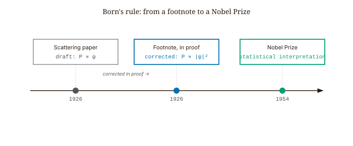
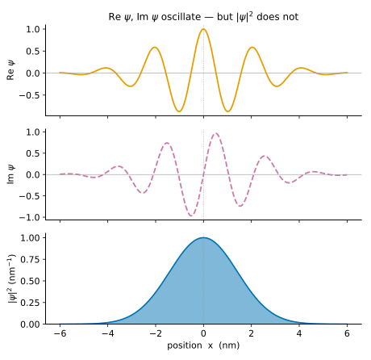
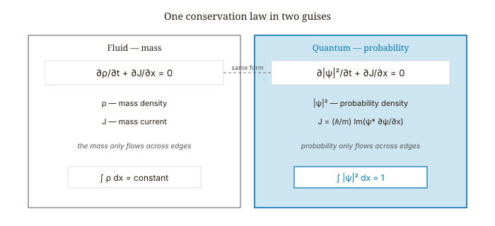
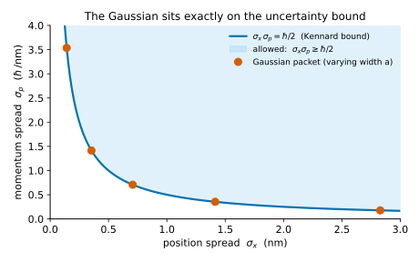
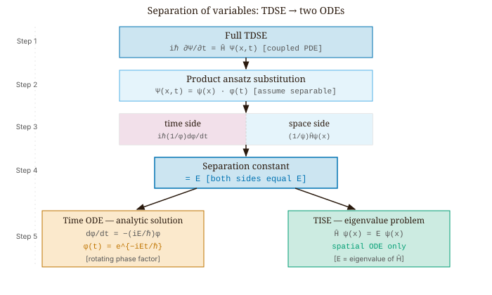
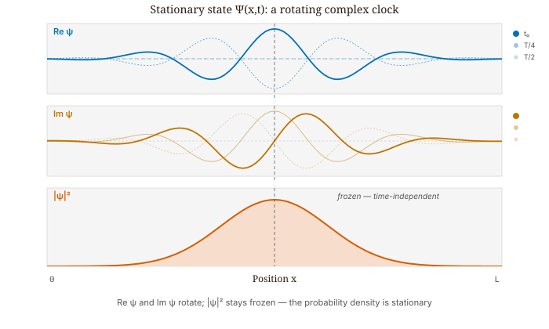
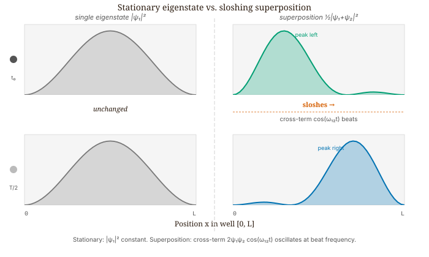

Quantum Mechanics · Volume 1
Chapter 3 — The Wave Function and the Schrödinger Equation
Chapters 1 and 2 left us holding two facts that do not sit comfortably together. Light and matter both spread out and behave like waves — they diffract, they interfere, and a single electron sent through a two-slit apparatus lands in a pattern that only a wave could build. And yet, every time we actually detect a photon or an electron, we find it all at once, at a single place, as one indivisible particle. A bare set of numbers — “the particle is at position \(x\), moving with velocity \(v\)” — cannot hold both facts at the same time: a point has no extent with which to interfere with itself, and a classical wave never arrives as a single localized dot. We need a richer object, one that travels and spreads like a wave, carries the information needed to produce interference, and still yields a definite particle when measured. That object is the wave function. This chapter is about what it is, the equation that governs how it changes in time, and what we can predict from it.
3.1 Why a Wave Function Is Necessary
While classical mechanics describes a particle by a position and a velocity, quantum mechanics does so by a wave function \(\psi(x,t)\) — a function that assigns a number to every position \(x\) at every time \(t\). That number is complex, carrying both a real and an imaginary part, a feature we will find is forced on us rather than chosen. The wave function is the complete description of the particle’s state: everything that can be predicted about the particle is computed from it.
The wave function itself is not something an instrument reads off directly. What connects it to the laboratory is its squared magnitude, \(|\psi(x,t)|^2\). Roughly, where \(|\psi|^2\) is large the particle is likely to be found, and where it is small the particle is rarely found. Making that statement precise — turning the wave function into actual numbers between zero and one — is the task of Born’s rule, which we take up next. But the essential picture is already in place: the wave \(\psi\) spreads, travels, and interferes, while the particle is what a measurement plucks out of it.
3.2 Born’s Rule: Probability from the Wave Function
We begin with a question that forces us to be precise: what are the units of \(|\psi|^2\)?
The particle moves along a line measured, say, in nanometers, and \(|\psi|^2\) is plotted against that line, so it carries units. The key point is that \(|\psi|^2\) is not a probability — it is a probability per nanometer, a density. The distinction matters. You cannot read “the particle is at position \(x\)” from the value of \(|\psi|^2\) at a single point, any more than you can read a city’s population from a density map at one address. To extract a probability — a dimensionless number between 0 and 1 — you must integrate over a region.
That integration defines the Born rule, the bridge from the wave function to actual measurements. Given a wave function \(\psi(x,t)\), the probability of finding the particle somewhere between \(x=a\) and \(x=b\) at time \(t\) is the area under the density curve across that stretch — which is exactly what the integral computes:
\[P\bigl(\text{particle in }[a,b]\bigr) = \int_a^b |\psi(x,t)|^2\,dx. \tag{3.1}\]
Max Born introduced this in 1926, in a paper on quantum scattering. His original draft wrote the probability as proportional to \(\psi\) itself — not \(|\psi|^2\). In a footnote added in proof, he corrected it. That footnote is one of the most consequential edits in the history of physics. Born received the Nobel Prize in 1954 for the statistical interpretation it introduced.

Because \(|\psi|^2\) is a density measured per unit length, it can take values greater than 1. Treating the value of the density at a point as a probability is a unit error. The distinction between probability density and probability is fundamental and should be clear before proceeding.
A common misconception concerns what the spreading of \(|\psi|^2\) over time means. When the probability density spreads wider, it is tempting to read this as the particle physically expanding. That reading is incorrect. When the particle is detected, it is found at one definite location. What spreads is the probability distribution of where that location might be. If the same experiment — same initial conditions, same Hamiltonian, same \(\psi(x,0)\) — were repeated many times, the histogram of measured positions would match \(|\psi|^2\). The spread of that histogram is what grows. The wave function is not the particle; it is the rule for computing probability distributions.
A word of caution about language. Terms like detect and measure are doing real work in these sentences, and they conceal genuine subtleties: what physically counts as a measurement, how a single definite outcome emerges from a wave function spread over many positions, the unavoidable role of the measuring apparatus, and the finite resolution of any real detector. None of this changes the practical rule — compute \(|\psi|^2\), integrate, and predict the statistics of repeated measurements — but the deeper question of what actually happens in a measurement is among the most debated in physics. We take it up carefully in the later chapter on measurement and the qubit; until then, “detection” is used in its everyday sense of registering the particle at a definite place.
Since \(|\psi|^2\) is a probability density and the particle must be found somewhere on the line, the probabilities over all positions have to add up to exactly one. Adding them up means integrating the density over all of space, so we require:
\[\int_{-\infty}^{\infty} |\psi(x,t)|^2\,dx = 1. \tag{3.2}\]
A wave function satisfying this condition is normalized. In practice, wave functions are often written without the proper constant out front. To normalize a given \(\tilde{\psi}\), compute \(\int|\tilde{\psi}|^2\,dx\), take its square root, and divide \(\tilde{\psi}\) by it.
Worked Example — Normalizing an Exponential Wave Function
We now apply the Born rule to a specific case. Consider the un-normalized wave function \(\tilde{\psi}(x) = e^{-|x|/a}\) for real \(a > 0\). To normalize it, we compute:
\[A^2\int_{-\infty}^{\infty}e^{-2|x|/a}\,dx = 2A^2\int_0^{\infty}e^{-2x/a}\,dx. \tag{3.3}\]
The split at \(x = 0\) is necessary because \(e^{-|x|/a} \neq e^{-x/a}\) for \(x < 0\). Evaluating:
\[2A^2\cdot\frac{a}{2} = A^2 a = 1 \implies A = \frac{1}{\sqrt{a}}. \tag{3.4}\]
Units check: with \(x\) in nm and \(a\) in nm, \(A\) has units of \(\text{nm}^{-1/2}\), so \(|\psi|^2\) has units of \(\text{nm}^{-1}\). This is correct for a one-dimensional probability density.
The probability of finding the particle in \([-a, a]\) is:
\[P = \frac{1}{a}\int_{-a}^{a}e^{-2|x|/a}\,dx = \frac{2}{a}\int_0^{a}e^{-2x/a}\,dx = 1 - e^{-2} \approx 0.865. \tag{3.5}\]
About 86.5% of the probability is in the central interval. The remaining 14% is in the tails \(|x| > a\).
Note that at \(x = 0\), \(|\psi(0)|^2 = 1/a\). For \(a = 0.5\) nm this equals 2 \(\text{nm}^{-1}\), a number greater than 1. This is not a problem. The density is measured in \(\text{nm}^{-1}\) and has no requirement to remain below 1. Expecting \(|\psi|^2 \leq 1\) everywhere is a units error, equivalent to expecting a population density map to never exceed one person per square kilometer.
3.3 The Time-Dependent Schrödinger Equation
We have said what the wave function is and how it yields probabilities. We have not yet said how it changes. The equation of motion — the quantum counterpart of Newton’s second law — was written down by Erwin Schrödinger in January 1926. He had been reading de Broglie’s 1924 thesis, which argued that particles have wave properties, and he wanted an equation that would reproduce the Bohr energy levels of hydrogen as a consequence rather than a postulate. Within six months he submitted four foundational papers to Annalen der Physik. At the center of all of them is
\[i\hbar\,\frac{\partial \Psi}{\partial t} = \hat{H}\,\Psi. \tag{3.6}\]
This is the time-dependent Schrödinger equation (TDSE). On the left, \(i = \sqrt{-1}\), \(\hbar\) is the reduced Planck constant, and \(\partial\Psi/\partial t\) is the rate at which the wave function changes in time. On the right, \(\hat{H}\) is the Hamiltonian, the operator that represents the system’s total energy. Writing the Hamiltonian out explicitly in one dimension gives the form we will actually work with:
\[i\hbar\,\frac{\partial \Psi}{\partial t} = -\frac{\hbar^2}{2m}\,\frac{\partial^2 \Psi}{\partial x^2} + V(x)\,\Psi. \tag{3.7}\]
The two terms on the right are the two contributions to the energy: the first, with the second spatial derivative, is the kinetic energy (how sharply the wave function curves encodes how fast the particle moves), and the second, \(V(x)\,\Psi\), is the potential energy. The equation is first order in time and second order in space: given the wave function at one instant, it determines the wave function at every later instant. Everything in the rest of this chapter is a consequence of this one equation, together with Born’s rule.
3.4 Why the Wave Function Must Be Complex
We can now see why \(\psi\) has to be complex rather than an ordinary real number. After all, the quantity we actually observe, \(|\psi|^2\), is real and never negative. Why not throw the imaginary part away and work with a purely real function?
Return to the equation we just wrote down. The factor \(i\) on the left is the crux. Suppose \(\psi\) were a purely real function. Then \(\partial\psi/\partial t\) would be real too, and \(i\hbar\) times a real number is purely imaginary — so the left side would be imaginary while the right side, \(\hat{H}\psi\), is real (for real \(\psi\) and a real potential energy \(V\)). The two sides could match only if both were zero. The Schrödinger equation therefore forces \(\psi\) to be complex-valued; a wave function that stayed real could not evolve in any consistent way.
To see what the imaginary part is for, consider a Gaussian wave packet — a smooth, localized bump of wave function — moving with central momentum \(\hbar k_0\):
\[\psi(x) = A\,e^{-x^2/(2a^2)}\,e^{ik_0 x}. \tag{3.8}\]
The bell-shaped factor \(e^{-x^2/(2a^2)}\) sets the packet’s location and width (the constant \(a\) is its spatial spread and \(A\) is fixed by normalization), while the factor \(e^{ik_0 x}\) is a pure oscillation that encodes the motion, with \(k_0\) the central wavenumber. Separating this into its real and imaginary parts:
\[\text{Re}\,\psi = A\,e^{-x^2/(2a^2)}\cos(k_0 x), \qquad \text{Im}\,\psi = A\,e^{-x^2/(2a^2)}\sin(k_0 x). \tag{3.9}\]
Both oscillate, and both carry the information encoded in \(k_0\). Now compute the density:
\[|\psi|^2 = A^2\,e^{-x^2/a^2}. \tag{3.10}\]
The oscillations vanish. The density is a smooth Gaussian with no trace of \(k_0\) anywhere. The momentum — the direction of travel, the central velocity — is invisible in \(|\psi|^2\). It lives entirely in the phase, in the relationship between \(\mathrm{Re}\,\psi\) and \(\mathrm{Im}\,\psi\). Discard the imaginary part and you can no longer tell a wave packet moving right from one moving left. Both would have the same \(|\psi|^2\), and both would look identical in every experimental histogram of position measurements. The physical content of the imaginary part is that it carries the direction of motion; without it, \(\psi\) cannot represent a moving particle.

3.5 The Conservation of Probability
We required that a wave function be normalized, \(\int|\psi|^2\,dx = 1\), so that the total probability of finding the particle somewhere is one. But the wave function changes in time. If \(\psi\) is normalized at \(t = 0\) and then evolves under the Schrödinger equation, does \(\int|\psi|^2\,dx\) stay equal to 1? It must, since otherwise the probability of finding the particle anywhere would drift away from 1 — an incoherent result. We can prove that the Schrödinger equation guarantees it.
The proof is a short calculation. We ask how the total probability changes in time by differentiating \(\int|\psi|^2\,dx\) with respect to \(t\), and wherever a time derivative of \(\psi\) (or of its complex conjugate \(\psi^*\)) appears, we use the Schrödinger equation to trade it for spatial derivatives. When the dust settles, the potential-energy terms cancel exactly and the kinetic terms collapse into a single spatial derivative:
\[\frac{\partial|\psi|^2}{\partial t} = -\frac{\partial J}{\partial x}, \tag{3.11}\]
where
\[J(x,t) = \frac{\hbar}{m}\,\mathrm{Im}\!\left(\psi^*\frac{\partial\psi}{\partial x}\right). \tag{3.12}\]

This is the continuity equation for probability, and it takes exactly the same form as the equations that express conservation of mass or of electric charge: the amount of “stuff” inside a region can change only by flowing across its edges. Here the stuff is probability, and \(J(x,t)\) is the probability current — the rate at which probability flows past the point \(x\). Integrate over the whole line and the current at the two far ends (\(\pm\infty\)) vanishes for any normalizable \(\psi\), leaving \(\frac{d}{dt}\int|\psi|^2\,dx = 0\). The total probability never changes: a state normalized once stays normalized for all time.
The current also makes precise the remark that a real wave function cannot carry momentum. If \(\psi\) is real then \(\mathrm{Im}(\psi^*\partial_x\psi) = 0\), so \(J = 0\) everywhere: no probability flows, and the particle has no net direction of travel. Multiplying by a phase \(e^{ip_0 x/\hbar}\) leaves \(|\psi|^2\) untouched but makes the current nonzero — the same spatial distribution, now set in motion. The directional information lives entirely in the phase.
3.6 Expectation Values and Operators
Born’s rule hands us the entire probability distribution for position; often we just want its average. The expectation value of position, written \(\langle x\rangle\), is the average position you would obtain over many measurements on identically prepared copies of the state — the mean of the distribution \(|\psi|^2\), computed by weighting each position \(x\) by how likely it is:
\[\langle x\rangle = \int_{-\infty}^{\infty} x\,|\psi(x,t)|^2\,dx. \tag{3.13}\]
Momentum takes more care. The wave function is written as a function of position, but momentum is not simply some function of \(x\) we can drop into the integral — the naive \(\langle p\rangle = \int p\,|\psi(x)|^2\,dx\) has no clear meaning. The clean route runs through the Fourier transform, the operation that re-expresses any function as a sum of pure waves of different wavelengths. Re-expressing \(\psi(x,t)\) this way produces a partner function \(\phi(p,t)\) living in “momentum space,” and \(|\phi(p,t)|^2\) turns out to be the probability density for momentum measurements, so that \(\langle p\rangle = \int p\,|\phi|^2\,dp\). A theorem of Fourier analysis (Parseval’s) lets us carry that average back to position space, where — because each pure wave \(e^{ipx/\hbar}\) has a momentum \(p\) fixed by how fast it oscillates in space — multiplying by \(p\) turns into taking a derivative. Momentum is therefore represented in position space by an operator, a rule that acts on the wave function:
\[\hat{p} = -i\hbar\frac{\partial}{\partial x}. \tag{3.14}\]
The sign here is not a convention that can be reversed. For a wave packet with central wavenumber \(k_0 > 0\), moving to the right, this operator gives \(\langle p\rangle = \hbar k_0 > 0\). Writing \(\hat{p} = +i\hbar\,\partial_x\) instead would reverse all directions, registering a negative average momentum for a rightward-moving packet.
3.7 The Uncertainty Principle
We can also ask how wide the position and momentum distributions are. The standard measure of a distribution’s width is its standard deviation \(\sigma\) — roughly, the typical amount by which a single measurement strays from the average. For position and momentum it is defined in the usual way, from the average of the square minus the square of the average:
\[\sigma_x = \sqrt{\langle x^2\rangle - \langle x\rangle^2}, \qquad \sigma_p = \sqrt{\langle p^2\rangle - \langle p\rangle^2}. \tag{3.15}\]
The Kennard inequality, proved by E. H. Kennard in 1927, states:
\[\sigma_x\,\sigma_p \geq \frac{\hbar}{2}. \tag{3.16}\]
To understand what this inequality says, consider the following experimental procedure. Prepare many identical copies of the same state \(\psi\). Measure position on half and record the standard deviation \(\sigma_x\). Measure momentum on the other half and record \(\sigma_p\). No particle is measured twice, and no measurement disturbs any other. The Kennard inequality states that the product \(\sigma_x\sigma_p\) cannot be smaller than \(\hbar/2\), regardless of the state.
The source of this bound is Fourier analysis, not physical disturbance. A function narrow in \(x\) must have a broad Fourier transform, and vice versa. The Kennard inequality is the exact, rigorous expression of this mathematical relationship, with \(\hbar/2\) as the precise lower bound.
A separate result, the Heisenberg measurement-disturbance relation, governs what happens when position and momentum are measured sequentially on the same particle. It has a different form, a different bound, and a different physical content. Ozawa formalized it in 2003, and Erhart et al. tested it experimentally in 2012. The two results are distinct and should not be conflated.
The Gaussian wave packet saturates the Kennard bound. For
\[\psi(x) = (\pi a^2)^{-1/4}\,e^{-x^2/(2a^2)}\,e^{ik_0x}, \tag{3.17}\]
a direct calculation gives:
\[\sigma_x = \frac{a}{\sqrt{2}}, \qquad \sigma_p = \frac{\hbar}{\sqrt{2}\,a}, \qquad \sigma_x\sigma_p = \frac{\hbar}{2}. \tag{3.18}\]
The product is exactly \(\hbar/2\). Every other normalizable state gives a strictly larger product. The Gaussian is the minimum-uncertainty state — the unique state that achieves the lower bound. The trade-off is direct: \(\sigma_x \propto a\) and \(\sigma_p \propto 1/a\). Decreasing \(a\) narrows the wave packet spatially and proportionally widens it in momentum. The product remains fixed. This is a consequence of Fourier analysis, not of any technological limitation, and no experimental technique can circumvent it.

3.8 Separation of Variables and Stationary States
We now return to the time-dependent Schrödinger equation and solve it. When the potential \(V\) is time-independent — as it is for the infinite square well, the harmonic oscillator, the hydrogen atom, and nearly every system in this book — there is a standard method, separation of variables, that reduces the problem to a spatial equation plus a trivial time factor.
The guess — called the product ansatz — is to try \(\Psi(x, t) = \psi(x)\,\phi(t)\), a spatial part times a time part. Substitute into the TDSE:
\[i\hbar\,\psi(x)\,\phi'(t) = \phi(t)\,\hat{H}\psi(x). \tag{3.19}\]
Divide both sides by \(\psi(x)\phi(t)\):
\[i\hbar\,\frac{\phi'(t)}{\phi(t)} = \frac{\hat{H}\psi(x)}{\psi(x)}. \tag{3.20}\]
The left side is a function of \(t\) only; the right side is a function of \(x\) only. For the two to be equal at every \(x\) and every \(t\), both sides must equal the same constant. Call that constant \(E\). We now have two separate ordinary differential equations:
\[i\hbar\,\phi'(t) = E\,\phi(t), \tag{3.21}\]
\[\hat{H}\,\psi(x) = E\,\psi(x). \tag{3.22}\]

Equation (3.21) is trivial: it says \(\phi(t) = e^{-iEt/\hbar}\), a phase rotating at angular frequency \(E/\hbar\). This is a universal form, the same regardless of the potential or the energy level.
Equation (3.22) is the time-independent Schrödinger equation (TISE):
\[\boxed{-\frac{\hbar^2}{2m}\,\frac{d^2\psi}{dx^2} + V(x)\,\psi(x) = E\,\psi(x).} \tag{3.23}\]
This is an eigenvalue problem: find the functions \(\psi\) such that \(\hat{H}\) acting on \(\psi\) returns \(\psi\) multiplied by a constant. Those functions are the stationary states (or energy eigenstates), and the constants \(E\) are the energy eigenvalues. The time evolution has been completely factored out — a rotating phase attached to each state — and all the interesting physics now lives in the spatial equation.
3.9 What the Energy Eigenvalue Means
The letter \(E\) was not chosen arbitrarily. It is the energy, in a precise and operational sense. For any state \(\Psi\), the expectation value of the Hamiltonian is
\[\langle \hat{H} \rangle = \int \Psi^*(x,t)\,\hat{H}\,\Psi(x,t)\,dx. \tag{3.24}\]
For a stationary state \(\Psi_n = \psi_n(x)\,e^{-iE_n t/\hbar}\), plug in. The phase \(e^{+iE_n t/\hbar}\) from the complex conjugate and the phase \(e^{-iE_n t/\hbar}\) from the state multiply to 1. The eigenvalue equation \(\hat{H}\psi_n = E_n\psi_n\) pulls \(E_n\) out of the integral, and normalization sets \(\int|\psi_n|^2\,dx = 1\). The result:
\[\langle \hat{H} \rangle = E_n. \tag{3.25}\]
That is more than just the average energy. The variance is also zero: \(\langle \hat{H}^2\rangle - \langle \hat{H}\rangle^2 = 0\). Every single energy measurement on a particle in state \(\psi_n\) returns exactly \(E_n\) — no spread, no uncertainty, no distribution. That is what it means to be an eigenstate of an operator: the particle is in a state with a definite energy.
There is also a consistency check. If \(E\) were complex with a nonzero imaginary part, the factor \(|e^{-iEt/\hbar}|^2 = e^{2\,\mathrm{Im}(E)\,t/\hbar}\) would cause the probability to grow or decay over time, and conservation of probability forbids that. Self-adjoint Hamiltonians — which is what you get with real potentials and physical boundary conditions — have only real eigenvalues. The \(E_n\) are always real numbers.
3.10 In What Sense a State Is Stationary
The full stationary state is
\[\Psi_n(x, t) = \psi_n(x)\,e^{-iE_n t/\hbar}. \tag{3.26}\]
The probability density is
\[|\Psi_n(x, t)|^2 = |\psi_n(x)|^2\cdot|e^{-iE_n t/\hbar}|^2 = |\psi_n(x)|^2. \tag{3.27}\]
The time dependence is gone. The probability of finding the particle in any region is constant in time. That is what “stationary” means.
What “stationary” does not mean is that the wave function itself is time-independent. \(\Psi_n\) is a complex function rotating in the complex plane at angular frequency \(E_n/\hbar\). Its real part goes as \(\psi_n(x)\cos(E_n t/\hbar)\) and its imaginary part as \(-\psi_n(x)\sin(E_n t/\hbar)\). They oscillate 90 degrees out of phase, like the two components of a clock hand. The wave function is a clock; the probability density is the clock’s shadow on the floor. The shadow does not move, but the clock is spinning. The real and imaginary parts oscillate while \(|\Psi|^2\) stays frozen — and if \(|\Psi|^2\) were ever seen to move for a single populated eigenstate, the phases would not be canceling as they must.

3.11 The Laser Cavity: The Same Problem
Consider a laser cavity: two mirrors facing each other with a gain medium between them. The cavity produces a single, monochromatic, phase-coherent beam at specific frequencies, and not others, because it only sustains standing waves that fit exactly between the mirrors. A wave that does not vanish at both mirror surfaces destroys itself on each round trip through destructive interference. A wave that does vanish at both surfaces builds up coherently. The cavity selects, from a continuous range of possible frequencies, the discrete set that satisfies its boundary conditions.
Quantization in quantum mechanics is this same phenomenon at atomic scales and with a different wave equation. The confining potential supplies the walls; only the spatial modes satisfying the boundary conditions survive; those modes are the stationary states; their discrete spatial frequencies correspond to discrete energies. The Schrödinger equation is the wave equation that determines which modes fit.
3.12 Global Phase and Relative Phase
Multiplying the entire wave function by \(e^{i\alpha}\) for any real \(\alpha\) — a global phase — leaves all observable quantities unchanged. The factor cancels in every probability density \(|\Psi|^2\) and every expectation value. States are therefore defined only up to a global phase.
The rotating phase \(e^{-iE_n t/\hbar}\) in a stationary state is a global phase for that single state, so it too is unobservable. A stationary state is stationary precisely because the rotating phase carries no measurable information.
When two stationary states are combined, the situation changes. Form the superposition
\[\Psi(x, t) = c_1\,\psi_1(x)\,e^{-iE_1 t/\hbar} + c_2\,\psi_2(x)\,e^{-iE_2 t/\hbar}. \tag{3.28}\]
The probability density is
\[|\Psi|^2 = |c_1|^2|\psi_1|^2 + |c_2|^2|\psi_2|^2 + 2\,\mathrm{Re}\!\left[c_1^*c_2\,\psi_1^*\psi_2\,e^{-i(E_2-E_1)t/\hbar}\right]. \tag{3.29}\]
The first two terms are frozen. The third oscillates at angular frequency \(\omega_{12} = (E_2 - E_1)/\hbar\) — the beat frequency between the two levels. This is the interference term, and it is the signature of superposition. Two states with different energies rotate at different rates; the angle between them in the complex plane grows steadily; and the resulting interference pattern shifts continuously across space. That is the sloshing.
The energy expectation value, by contrast, does not slosh. For any superposition:
\[\langle \hat{H}\rangle = \sum_n |c_n|^2\,E_n. \tag{3.30}\]
This is a weighted average of the eigenvalues with weights \(|c_n|^2\). The cross terms that carry the time dependence vanish by orthogonality of the eigenstates, so the result is exactly time-independent. The probability distribution oscillates across the well while the total energy remains constant — quantum energy conservation expressed in this language.

3.13 Worked Example — A Single Eigenstate Against a Superposition
Take the ground state of the infinite square well (details in Chapter 5):
\[\psi_1(x) = \sqrt{\frac{2}{L}}\,\sin\!\left(\frac{\pi x}{L}\right), \quad 0 \leq x \leq L. \tag{3.31}\]
Its stationary state is \(\Psi_1(x,t) = \psi_1(x)\,e^{-iE_1 t/\hbar}\), and the probability density follows as:
\[|\Psi_1(x,t)|^2 = \frac{2}{L}\sin^2\!\left(\frac{\pi x}{L}\right). \tag{3.32}\]
No \(t\). The expectation of position:
\[\langle x\rangle = \int_0^L x\cdot\frac{2}{L}\sin^2\!\left(\frac{\pi x}{L}\right)dx = \frac{L}{2}, \tag{3.33}\]
by symmetry. This value sits fixed for all time.
Now mix in the first excited state:
\[\Psi(x,t) = \frac{1}{\sqrt{2}}\,\psi_1(x)\,e^{-iE_1 t/\hbar} + \frac{1}{\sqrt{2}}\,\psi_2(x)\,e^{-iE_2 t/\hbar}. \tag{3.34}\]
Since both \(\psi_1\) and \(\psi_2\) are real, the probability density becomes:
\[|\Psi(x,t)|^2 = \frac{1}{2}\!\left[\psi_1^2 + \psi_2^2 + 2\,\psi_1\psi_2\,\cos\!\left(\frac{(E_2-E_1)t}{\hbar}\right)\right]. \tag{3.35}\]
Now \(|\Psi|^2\) oscillates, and the probability sloshes back and forth across the well at the beat frequency. The “stationary” property is gone — not through any error, but because a superposition of eigenstates at different energies is genuinely not a stationary state. Stationarity is the privilege of a pure energy eigenstate, and pure energy eigenstates are special.
3.14 Building the General Solution
Suppose \(\hat{H}\) comes with a complete, orthonormal set of eigenstates \(\{\psi_n\}\) and eigenvalues \(\{E_n\}\). “Complete” means that any physically reasonable wave function can be built as a superposition of the \(\psi_n\); “orthonormal” means \(\langle\psi_m|\psi_n\rangle = \delta_{mn}\). For the self-adjoint operators of quantum mechanics, both properties are guaranteed by the spectral theorem of functional analysis — a result of mathematics, not a fresh quantum postulate.
The completeness of the eigenstates for the infinite well is the Fourier sine series theorem, which Fourier introduced (for the heat equation) in 1822. The quantum application adds only the probabilistic interpretation and the phase rotation; the completeness itself is a century older than quantum mechanics. There is no quantum mystery here, only old mathematics in new clothing.
Given an initial state \(\Psi(x, 0)\), expand it:
\[\Psi(x, 0) = \sum_n c_n\,\psi_n(x), \qquad c_n = \int \psi_n^*(x)\,\Psi(x, 0)\,dx. \tag{3.36}\]
Because the basis is orthonormal, each projection is exact and unique. We then hang the time-evolution phases on the terms:
\[\Psi(x, t) = \sum_n c_n\,\psi_n(x)\,e^{-iE_n t/\hbar}. \tag{3.37}\]
This is the complete general solution of the TDSE for any time-independent potential. There are three steps: solve the eigenvalue problem to find \(\{\psi_n, E_n\}\); project the initial condition to find \(\{c_n\}\); attach the rotating phases. Step one is the hard one. Steps two and three are a calculation.
Stopping at step one gives the stationary states but misses everything that happens when the particle is not in a pure eigenstate. Finding the eigenstates completes the setup, not the problem.
Looking Ahead
The next chapter, Chapter 4 — The Free Particle and Wave Packets, sets a particle loose with no potential to confine it. Its energy spectrum becomes continuous, and we build localized, moving wave packets by superposing plane waves — then watch them spread and separate phase velocity from group velocity.
Exercises
Warm-up
-
[Born rule: density vs. probability] A particle has wave function \(\psi(x) = A\,e^{-|x|/a}\) for real \(a > 0\). (a) Find \(A\) such that \(\int_{-\infty}^{\infty}|\psi|^2\,dx = 1\). (b) Compute \(P(-a \leq x \leq a)\). © For \(a = 0.5\) nm, compute \(|\psi(0)|^2\) and explain why the value exceeding 1 does not violate anything. What this tests: unit distinction between probability density and probability.
-
[Complex structure of \(\psi\), sign of momentum operator] Let \(\psi(x) = N\,e^{-x^2/(2a^2)}\,e^{ik_0 x}\) with \(a = 1\) nm and \(k_0 = -5\) \(\text{nm}^{-1}\). (a) Sketch \(\mathrm{Re}\,\psi\), \(\mathrm{Im}\,\psi\), and \(|\psi|^2\) on the same axis — which is symmetric, which oscillates? (b) Without computing integrals, state the sign of \(\langle p\rangle\) and the value of \(\langle x\rangle\). Justify each in one sentence. What this tests: reading physical information out of the phase.
-
[Probability current for a real wave function] For a real-valued \(\psi\), show directly from \(J = (\hbar/m)\,\mathrm{Im}(\psi^*\,\partial_x\psi)\) that \(J = 0\) everywhere. Then state what this implies: can a real \(\psi\) describe a particle with net momentum in one direction? What this tests: connection between phase and current.
Application
-
[Expectation values for a non-Gaussian state] For the infinite-square-well ground state \(\psi_1(x) = \sqrt{2/L}\,\sin(\pi x/L)\) on \([0,L]\): (a) compute \(\langle x\rangle\) and \(\sigma_x\) by direct integration; (b) compute \(\langle p\rangle\) using \(\hat{p} = -i\hbar\,\partial_x\) and explain why \(\langle p\rangle = 0\) makes sense for a standing wave. What this tests: applying expectation value machinery to a state that is not a Gaussian.
-
[Kennard inequality: preparation vs. disturbance] A professor claims: “If I measure a particle’s position very precisely, I must have disturbed its momentum. That is the uncertainty principle.” Write a two-paragraph response. First paragraph: what is physically correct in this claim. Second paragraph: what is wrong, and what the Kennard inequality actually says. What this tests: distinguishing the state-space inequality from the measurement-disturbance argument.
-
[Units and dimensional reasoning] A wave function is tabulated numerically with \(x\) in meters. The peak of \(|\psi|^2\) at \(t = 0\) reads \(3.2 \times 10^9\) \(\text{m}^{-1}\). (a) Is this a valid probability density? (b) Estimate the probability of finding the particle within \(\pm 0.1\) nm of the peak, treating \(|\psi|^2\) as roughly constant over that interval. © Someone says the wave function is “unnormalized by a factor of 2.” What does this mean precisely, and what is the corrected peak density? What this tests: facility with units throughout a calculation.
Synthesis
-
[Born rule in momentum space] Define \(\phi(p) = (1/\sqrt{2\pi\hbar})\int_{-\infty}^{\infty}\psi(x)\,e^{-ipx/\hbar}\,dx\). For the Gaussian \(\psi(x) = (\pi a^2)^{-1/4}\,e^{-x^2/(2a^2)}\,e^{ik_0 x}\), show by direct Fourier transform that \(\phi(p)\) is a Gaussian centered at \(\hbar k_0\) with width \(\hbar/a\). Verify \(\int|\phi|^2\,dp = 1\). What this tests: carrying the Born rule from position space into momentum space and confirming the Gaussian saturates the Kennard bound.
-
[Continuity equation and wave-packet motion] The continuity equation reads \(\partial_t|\psi|^2 = -\partial_x J\). (a) Suppose \(J > 0\) over some interval \([a,b]\) and zero outside. Sketch how \(|\psi|^2\) evolves near that interval over a short \(\delta t\). (b) Suppose \(J > 0\) on the left half and \(J < 0\) on the right half of the interval. Where does \(|\psi|^2\) increase? Decrease? © Use this reasoning, without equations, to explain why a wave packet moving right has \(J > 0\) in the high-probability region. What this tests: reading the continuity equation as a spatial flow, not just a conservation identity.
-
[Stationary states and superposition] Two eigenstates \(\psi_1, \psi_2\) of a potential have energies \(E_1, E_2\). (a) Show that the pure state \(\Psi = \psi_1 e^{-iE_1 t/\hbar}\) has a time-independent \(|\Psi|^2\). (b) Show that the equal superposition \(\Psi = \tfrac{1}{\sqrt2}(\psi_1 e^{-iE_1 t/\hbar} + \psi_2 e^{-iE_2 t/\hbar})\) has a \(|\Psi|^2\) that oscillates, and identify the beat frequency. © Explain why the energy expectation value is nevertheless time-independent. What this tests: the distinction between a stationary state and a superposition, and energy conservation under sloshing.
Challenge
- [Limits of the formalism] The plane wave \(\psi(x) = e^{ikx}\) has \(|\psi|^2 = 1\) everywhere. (a) Show it cannot be normalized on \((-\infty,\infty)\). (b) Compute \(\langle p\rangle\) formally using \(\hat{p} = -i\hbar\,\partial_x\). © In what sense is the plane wave a state of “definite momentum \(\hbar k\)”? In what sense is this problematic, given the Born rule? (d) Propose how plane waves could serve as building blocks for normalizable wave functions. (This is the direction the general-solution section of this chapter, and Chapter 4, develop.) What this tests: honest confrontation with the formal limits of position-space normalization, and the direction toward Fourier synthesis.
References
- Schrödinger, E. (1926). Quantisierung als Eigenwertproblem. Annalen der Physik, 79, 361–376. (First paper on the wave equation. English translation in: Schrödinger, E. Collected Papers on Wave Mechanics, Blackie and Son, 1928.)
- Born, M. (1926). Zur Quantenmechanik der Stoßvorgänge (Vorläufige Mitteilung). Zeitschrift für Physik, 37, 863–867. (The note added in proof carries the \(|\psi|^2\) correction.)
- Born, M. (1926). Zur Quantenmechanik der Stoßvorgänge. Zeitschrift für Physik, 38, 803–827.
- Kennard, E. H. (1927). Zur Quantenmechanik einfacher Bewegungstypen. Zeitschrift für Physik, 44, 326–352.
- Robertson, H. P. (1929). The uncertainty principle. Physical Review, 34, 163–164.
- Ozawa, M. (2003). Universally valid reformulation of the Heisenberg uncertainty principle on noise and disturbance in measurement. Physical Review A, 67, 042105.
- Erhart, J., Sponar, S., Sulyok, G., Badurek, G., Ozawa, M., & Hasegawa, Y. (2012). Experimental demonstration of a universally valid error-disturbance uncertainty relation. Nature Physics, 8, 185–189.
- Griffiths, D. J., & Schroeter, D. F. (2018). Introduction to Quantum Mechanics (3rd ed.). Cambridge University Press. §1.1–1.6, §2.1.
- Shankar, R. (1994). Principles of Quantum Mechanics (2nd ed.). Plenum. §5.1.
- Sakurai, J. J., & Napolitano, J. (2021). Modern Quantum Mechanics (3rd ed.). Cambridge University Press. §1.6.
- Ballentine, L. E. (2014). Quantum Mechanics: A Modern Development (2nd ed.). World Scientific. §3.1.
- von Neumann, J. (1932). Mathematische Grundlagen der Quantenmechanik. Springer. (English translation: Mathematical Foundations of Quantum Mechanics, Princeton University Press, 1955.)
- Stein, E.M., & Shakarchi, R. (2003). Fourier Analysis: An Introduction. Princeton University Press. Ch. 4.
- Feynman, R. P., Leighton, R. B., & Sands, M. (1965). The Feynman Lectures on Physics, Vol. III. Addison-Wesley. §1-1.